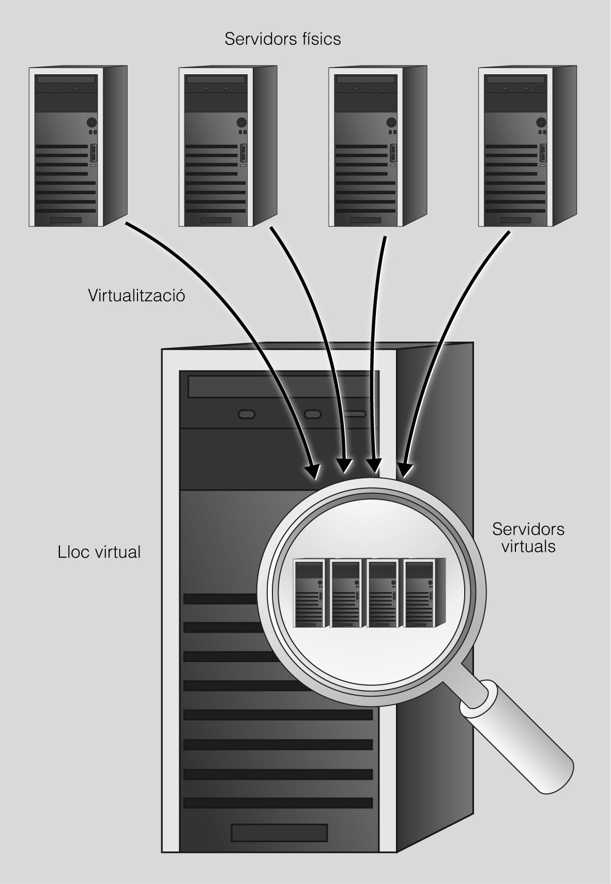

6. Servidores virtuales
Cuando hablamos de la creación de sitios virtuales nos estamos refiriendo a la acción de hacer trabajar más de un sitio web, por ejemplo, las páginas web www.web1.caty www.web2.caten un único ordenador.
Tal como muestra la figura siguiente aunque ambos dominios estén trabajando en la misma máquina física, nunca nos daremos cuenta cuando visitamos estos sitios web.

Los sitios web virtuales se pueden basarse tanto en direcciones de Internet (IP) , donde cada sitio web tiene una dirección de Internet (IP) diferente, como en nombres diferentes , es decir, varios sitios web con diferentes nombres de dominio estarán trabajando con una única dirección de Internet (IP). Cabe decir que, aunque estemos trabajando en la misma máquina física, como usuarios observaremos que el usuario, cuando visita estos sitios web, no se da cuenta.
Para explicar la técnica de la creación de sitios web virtuales, trabajaremos con dos ejemplos: www.aplicacionsweb.org y www.serveisenxarxa.org.
Los dos sitios webs virtuales serán servidos por el mismo servidor web. El directorio por defecto donde se encuentran las páginas web es /var/www, donde crearemos las diferentes estructuras de directorio. Por lo tanto, dentro de los directorios /var/www/aplicacionsweby /var/www/seveisenxarxaencontraremos los archivos de los sitios web correspondientes a las páginas web anteriores.
Para la configuración y puesta en marcha de los sitios web virtuales debemos construir, en primer lugar, la estructura de directorios donde guardaremos los sitios. Utilizaremos dentro del directorio reservado a cada sitio web la carpeta de public_htmlpara alojar los archivos del sitio web.
Una vez definidos los directorios donde guardaremos los sitios web virtuales, tendremos que dirigirnos al directorio /etc/apache2, donde encontraremos los archivos de configuración de Apache. En este caso, el archivo principal de configuración es apache2.conf.
Considerando que para trabajar con los sitios virtuales tendremos que hacer algunos cambios en el contenido del archivo, tendremos que considerar, antes de establecer ningún cambio, qué configuración de sitios web virtuales queremos crear, es decir, lugares virtuales basados en direcciones de Internet (IP) o bien basados en nombres.
Servidores virtuales en Apache
Apache2 se entrega con una configuración predeterminada virtual-host-friendly . Es decir, está configurado con un único host virtual predeterminado (utilizando la directiva VirtualHost) que se puede modificar o utilizar como si tuviera un solo lugar o que se utilizara como plantilla para servidores virtuales adicionales si tiene varios sitios. Si se deja solo, el anfitrión virtual predeterminado servirá como lugar predeterminado o los usuarios del sitio verán si la URL que introduzca no coincide con la directiva ServerNamede ninguna de sus sitios personalizados. Para modificar el servidor virtual predeterminado, edite el archivo/etc/apache2/sites-available/000-default.conf.
Si desea configurar un nuevo host virtual o lugar, copie estos archivos en el mismo directorio con el nombre que seleccione. Por ejemplo:
sudo cp /etc/apache2/sites-available/000-default.conf /etc/apache2/sites-available/elmeullocweb.conf
La configuración por defecto es la siguiente:
<VirtualHost *:80>
# The ServerName directive sets the request scheme, hostname and port that
# the server uses to identify itself. This is used when creating
# redirection URLs. In the context of virtual hosts, the ServerName
# specifies what hostname must appear in the request's Host: header to
# match this virtual host. For the default virtual host (this file) this
# value is not decisive as it is used as a last resort host regardless.
# However, you must set it for any further virtual host explicitly.
#ServerName www.example.com
ServerAdmin webmaster@localhost
DocumentRoot /var/www/html
# Available loglevels: trace8, ..., trace1, debug, info, notice, warn,
# error, crit, alert, emerg.
# It is also possible to configure the loglevel for particular
# modules, e.g.
#LogLevel info ssl:warn
ErrorLog ${APACHE_LOG_DIR}/error.log
CustomLog ${APACHE_LOG_DIR}/access.log combined
# For most configuration files from conf-available/, which are
# enabled or disabled at a global level, it is possible to
# include a line for only one particular virtual host. For example the
# following line enables the CGI configuration for this host only
# after it has been globally disabled with "a2disconf".
#Include conf-available/serve-cgi-bin.conf
</VirtualHost>
# vim: syntax=apache ts=4 sw=4 sts=4 sr noetUna vez realizados los cambios activaremos en sitio web con el mando a2ensite:
#a2ensite elmeullocwebDespués cargaremos de nuevo la configuración de Apache2 con el comando:
#service apache2 reload
Para la depuración de error en los archivos de configuración de sitios virtuales utilizar:
#apache2ctl -tLugares virtuales basados en la dirección de Internet (IP)
En este caso, podremos alojar múltiples dominios en una única máquina que dispondrá de diferentes direcciones de Internet (IP) y, en cada una de ellas, se ejecutará un sitio virtual.
Tendremos que cambiar la directiva <VirtualHost *:80>de forma que se especifique a qué dirección IP debe responder. Por ejemplo <VirtualHost 192.168.2.112:80>si debe responder a la dirección IP 192.168.2.112.
<VirtualHost 192.168.2.112:80>
DocumentRoot "/var/www/serveisenxarxa/public_html"
</VirtualHost>Lugares virtuales basados en el nombre de dominio
El problema de los sitios web virtuales basados en direcciones de Internet (IP) es que, considerando que se alojan muchos dominios, necesitaremos una dirección de Internet (IP) para cada uno de los dominios. Por lo tanto, puede ser preferible trabajar con sitios virtuales basados en nombres. En este caso, después de copiar el archivo de configuración por defecto, deberemos añadir la directriz ServerNamedado que, si bien los sitios virtuales se encuentran en la misma IP, se debe cambiar el nombre para cada uno de los puestos. En el caso de trabajar con servidor DNS, éste deberá estar configurado para resolver estos lugares en las zonas correspondientes. Y la directiva DocumentRoot para indicar desde qué directorio se servirán las páginas. Esta sería la configuración para puesto www.serveisenxarxa.org:
<VirtualHost *:80>
ServerName www.serveisenxarxa.org
DocumentRoot "/var/www/serveisenxarxa/public_html"
</VirtualHost>Finalmente, para verificar que todos los cambios aplicados han tenido éxito, volveremos a arrancar el servidor web.
Llicenciat sota la Llicència Creative Commons Reconeixement CompartirIgual 4.0